교통기사 (2006-09-10 기출문제)
1과목: 교통계획
1. 다음 중 일방통행도로의 설치효과로 적합하지 않은 것은?
- 용량증대
- 상충이동류감소
- 통행거리단축
- 주차조건개선
(정답률: 100%)

2. 교통계획을 장, 단기로 구분할 때 단기교통계획의 특성은?
- 소수의 유사한 대안
- 거시적인 계획
- 고투자액 소요
- 서비스 지향적 계획
(정답률: 알수없음)
3. 다음의 통행특성 분석에 관한 설명 중 틀린 것은?
- 통행자 분석을 위해 대상이 되는 통행자란 일정거리 이상의 보행이나 교통수단을 이용하여 하루에 1회 이상 움직인 사람을 말한다.
- 통행자 분석은 비통행이유 중 통행으로 전환이 가능한 비통행자가 있기 때문에 비통행자 분석과 같이 이루어져야 한다.
- 목적통행이란 한쌍의 출발지와 도착지를 가지고 하나 또는 둘 이상의 통행수단을 이용하여 하나의 목적을 달성하기 위해 한사람이 1회 움직이는 것을 말한다.
- 목적통행을 수단통행으로 나눈 비는 일반적으로 갈아타는 환승비율을 의미한다.
(정답률: 알수없음)
4. 교통계획을 위한 현황자료 조사에서 인구, 소득, 자동차 보유대수, 직업별 고용자수, 학생수 등 사회경제지표를 조사하는데 그 용도로서 거리가 먼 것은?
- 교통투자사업의 재원확보 평가지표로 활용
- 통행발생의 설명변수로 활용
- 표본조사 결과의 전수화를 위한 총량지표로 활용
- 토지이용계획 대안의 수립과 인구고용 기회의 배분을 위한 기초자료로 활용
(정답률: 알수없음)
5. 기존의 버스전용도로(Busway)로 이용되던 시설을 버스를 포함하는 다인승 차로(HOV lane)로 전환시 나타날 수 있는 변화가 아닌 것은?
- 다인승 차량 승객의 통행시간 감소
- 기존 버스 노선의 승객 증가
- 다인승 차로 주변 도로 정체 완화
- 기존 버스노선 운행 효율성 감소
(정답률: 100%)
6. 다음 중 통행자가 어느 지점에서 다른 지점으로 통행하고자 할 때 통행비용이 가장 적게 되는 경로를 택한다는 전제조건을 이론화한 것은?
- All or Nothing 법
- Fratar 법
- Entropy 법
- Logit 법
(정답률: 알수없음)
7. 성장율법에 의한 통행분포모형에 관한 설명 중 틀린 것은?
- 현재 통행자의 통행형태가 장래에 변한다는 가정하에 실시되는 방법이다.
- 분석방법으로는 균일성장률법, 평균성장률법, 프라타법, 퍼네스법 등이 있다.
- 사회, 경제적 활동이 급격히 변하는 지역이나 도시에는 부적합하다.
- 성장률 산정의 변수들은 총통행량, 통행유출량, 통행유입량 등이 사용된다.
(정답률: 75%)
8. 수단선택(Mode Choice0에서 사용되는 Logit(로짓)모형과 Probit(프로빗)모형에 대한 설명으로 옳은 것은?
- 로짓모형은 통합모형이고 프로빗모형은 개별행태모형이다.
- 로짓모형은 이항모형이고 프로빗모형은 다항모형이다.
- 로짓모형은 Weibull 분포로 가정하고 프로빗모형은 정규분포로 가정된다.
- 로짓모형과 프로빗모형은 이용자료가 적을 때는 사용할 수 없다.
(정답률: 80%)
9. 분석대상지역을 여러 지역으로 나눈 후 각 지역마다 발생 및 도착교통량을 예측하는 단계는?
- 노선배정단계
- 통수단의 선택단계
- 통행발생단계
- 통행분석단계
(정답률: 알수없음)
10. 공동배차제(버스회사)의 유형으로 적합하지 않은 것은?
- 노선공동관리
- 수입금공동관리
- 차량공동관리
- 인원공동관리
(정답률: 92%)
11. 장래의 존별 통행발생량을 산출한 후 통행분포과정 이전에 이용가능한 교통수단별 분담율을 산정한 후 각 수단별 통행수요를 도출하는 방법은 어떠한 모형인가?
- 통행단 모형
- 통행교차 모형
- 통행발생 모형
- 수단분담률 모형
(정답률: 알수없음)
12. 조사대상지역 밖에 출발지 또는 목적지를 가진 통행을 조사하는 것으로, 조사대상지역 경계의 주요지점을 조사 지점으로 하여 유입, 유출되는 차량을 면접 조사하는 방법이 있으며, 가구 설문 조사등 본 조사의 보완용으로 활용되는 조사는?
- 스크린 라인(Screen Line) 조사
- 폐쇄선(Cordon Line) 조사
- 차량 번호판 조사
- 노측 면접 조사
(정답률: 알수없음)
13. 다음의 교통요금 구조중 장거리 승객에 비해 단거리 승객의 비용부담이 많으며 도시확산을 간접적으로 유도할 수 있는 등의 단점을 가지고 있는 요금구조는?
- 균일요금제
- 거리요금제
- 거리비례제
- 구간요금제
(정답률: 알수없음)
14. 아래의 도면과 같은 노선망에 1,000대의 차량이 교통존①에서 교통존②까지 가고자 한다. 통행시간(T)은 통행량(V)의 함수로 도면에서와 같이 주워졌다고 한다. 운전자가 통행시간을 최소로 하는 노선을 선택한다면(이용자 최적평형상태) a경로와 b경로의 평형통행량은 각각 얼마가 되겠는가?
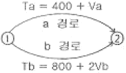
- Va = 800, Vb = 200
- Va = 700, Vb = 300
- Va = 500, Vb = 500
- Va = 400, Vb = 600
(정답률: 50%)
15. 교통수요분석의 표준적 모형으로 교통존이라는 지역단위로 묶어 분석하는 집계모형(aggregate model)과 달리 통행자의 개별적 특성을 바탕으로 하는 비집계모형(disaggregate model)에 관한 설명으로 틀린 것은?
- 이론적 배경은 효용이론이며 모델의 구조는 확률모형이다.
- 정립된 모형은 전체지역 또는 다른 지역에 적용이 불가능하며 시간적으로도 이전이 불가능하다.
- 교통정책의 단기적인 영향을 쉽게 추정 가능하다.
- 소수의 표본 측정자료로도 모형정립이 가능하다.
(정답률: 82%)
16. 교통수단선택 모형 중 통행발생단계에서 함께 사용하는 모형은?
- 통행단모형
- 중력모형
- 통행교차모형
- 카테고리분석법
(정답률: 알수없음)
17. 다음 중 계획교통량의 추정단계 중에서 가장 앞서야 할 단계는?
- 인구, 경제 및 토지이용 예측
- 교통현황 분석
- 경제 및 토지이용 현황조사
- 죤 설정
(정답률: 알수없음)
18. 방사형 대중교통 노선망(Radial Transit Line)의 노선형태로 인한 특징적인 단점은?
- 노선의 도심 집중으로 교통혼잡을 야기할 수 있다.
- 잦은 환승으로 인한 승객의 불편과 대기시간의 증가를 가져온다.
- 노선 망이 복잡하여 이용자에게 혼란을 초래한다.
- 외곽으로부터 도심까지의 통행거리가 상대적으로 길다.
(정답률: 73%)
19. 도심교통수요의 억제정책으로 적합하지 않은 것은?
- 대중교통수단 육성
- 자가용 통행금지구역 확대
- 보행자 전용도로 건설
- 도심 주차장 건설
(정답률: 알수없음)
20. 두 지역을 연결하는 두 개의 도로 A, B가 있다. 이 두 도로의 승용차 통행비용함수가 다음과 같을 시 Wardrop의 제1법칙에 의한 두 도로간의 통행배정(배분)량으로 맞는 것은? (YA도로 = 3XA + 2, YB도로 = 2XB + 7, 총첨두교통량 3000대/시, X : 교통량(대/시), Y : 총통행비용(원))
- XA = 1,799(대/시), XB = 1,201(대/시)
- XA = 1,201(대/시), XB = 1,799(대/시)
- XA = 1,600(대/시), XB = 1,400(대/시)
- XA = 1,400(대/시), XB = 1,600(대/시)
(정답률: 알수없음)
2과목: 교통공학
21. 교통신호등의 운영방식 중 교통량감응방식에 대한 설명으로 옳지 않은 것은?
- 교차로 주위에서의 차량 정차를 억제하는 효과가 있다.
- 인력에 의한 교통량 조사가 필요 없다.
- 정주기방식에 비해 필요 없는 지체시간을 상당부근 감소시킬 수 있다.
- 차량검지기의 설치 및 관리가 용이하고 비용이 저렴하다.
(정답률: 92%)
22. 다음 중 도로의 차로수(N)를 결정하는 방법으로서 가장 적당한 방법은?
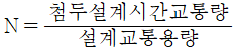
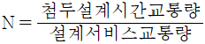
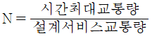
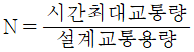
(정답률: 알수없음)
23. 다음 중 도로의 구조ㆍ시설기준에 관한 규칙에 의한 설계자동차 중 대형자동차의 최소회전반경에 해당하는 것은?
- 6m
- 10m
- 12m
- 15m
(정답률: 80%)
24. 다음의 교통량 자료에서 첨두시간계수(PHF)를 구하면?
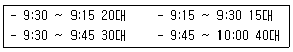
- 1.52
- 1.75
- 0.66
- 0.57
(정답률: 50%)
25. 황색신호시간에 대한 설명 중 옳지 않은 것은?
- 너무 짧으면 교통사고의 위험이 있다.
- 보통 3 ~ 6초 정도의 시간을 준다.
- 교차로 횡단길이가 길수록 황색시간은 길다.
- 차량의 길이와 황색시간은 관계없다.
(정답률: 알수없음)
26. 고속도로의 연결로-연결로 엇갈림 구간을 계획하고 설계할 때 엇갈림 구간의 길이는 설계 수준상 최소 얼마를 확보하여야 하는가?
- 150m
- 200m
- 250m
- 300m
(정답률: 알수없음)
27. 자동차가 어떤 구간을 주행하는데 소요된 시간(정지시간 포함하지 않음)과 그 구간의 거리로부터 구한 속도로서 교통용량 등의 해석에 이용되는 속도는?
- 구간속도
- 지정속도
- 주행속도
- 운전속도
(정답률: 알수없음)
28. 가변차로제에 대한 설명 중 옳지 않은 것은?
- 기존도로를 효율적으로 활용한다.
- 통제시설이 적절하지 못할 경우 사고의 위험이 높다.
- 가변일방차로제와 비교할 때 종방향교통이 우회할 필요가 없다.
- 일방통행제와 대비할 때 우회도로를 필요로 한다.
(정답률: 알수없음)
29. 그림과 같은 병목흐름에서 도착 및 출발하는 차량수를 누적시킨 시간-차량 누적 곡선에 대한 설명 중 옳지 않은 것은?
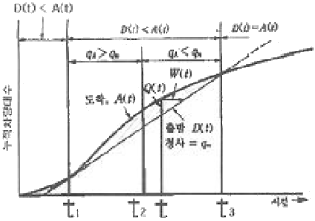
- t1에서 시작하여 t3점까지 대개행렬이 존재한다.
- 총 대기행렬의 규모는 A(t)곡선과 D(t)직선 사이의 면적의 1/2이다.
- 시각 t에서의 대기행렬의 길이는 Q(t)이다.
- 시각 t에 도착한 차량의 대기시간은 W(t)이다.
(정답률: 알수없음)
30. 반경 250m의 곡선부가 있다. 이것에 대해서 다음의 경우 편경사는 얼마 이상으로 해야 하는가? (단, 주행속도는 설계속도의 90%로 한다. 설계속도는 60km/h, 마찰계수 f=0.020)
- 0.072
- 0.081
- 0.097
- 0.102
(정답률: 알수없음)
31. 고속도로기본구간에서 이상적인 도로조건에해당하지 않는 것은?
- 교통류는 승용차로만 구성
- 차로폭 3.5m 이상
- 측방여유폭 1m 이상
- 평지
(정답률: 알수없음)
32. 일정 시간 동안 도로의 한 구간을 차지하는 모든 차량의 평균 속도로, 속도의 조화 평균값으로 나타내며 교통분석시 이용되는 것은?
- 시간평균속도
- 설계속도
- 공간평균속도
- 자유속도
(정답률: 알수없음)
33. 도시 고속도로상 3km 구간에서 차량 6대를 조사한 결과 소요시간이 각각 3.2분, 3.8분, 4.0분, 2.9분, 3.4분, 3.7분일 때 시간 평균속도는?
- 50.2kph
- 51.4kph
- 52.0kph
- 53.5kph
(정답률: 알수없음)
34. 포화교통유율(saturation flow-rate)은 포화용량이라고도 한다. 다음 중 포화용량(s)과 포화차두시간(t)과의 관계식으로 옳은 것은?
- h=s/3,600
- s=100/h
- h=1,000/s
- s=3,600/h
(정답률: 93%)
35. 교통류 시뮬레이션 모형은 미시적(Microscopic)모형과 거시적(Macroscopic)모형으로 대별된다. 미시적 모형에 사용되는 이론은?
- 추중이론(Car-following theory)
- 충격파이론(Shock-wave theory)
- 연속방정식
- Input-Output Analysis
(정답률: 알수없음)
36. PIEV 시간은 교통시설 설계에서 대단히 중요한 요소이다. 도로 설계에 사용되는 기준으로서 PIEV 시간은 얼마인가?
- 2.5초
- 2.0초
- 1.5초
- 1.0초
(정답률: 55%)
37. 다음 중 일정한 도로구간의 교통류를 설명하는 세 가지 기본적인 특성변수가 아닌 것은?
- 일정시간 동안에 한 지점을 통과한 차량 수
- 한 순간에 도로의 일정구간을 점유한 차량 수
- 일정시간 동안에 변화한 공간이동량
- 일정시간 동안 정지했다가 출발하는 차량 수
(정답률: 80%)
38. 대기 행렬에 있는 즉 서비스를 기다리고 있는 평균 차량대수를 나타내는 식은? (단, λ : 평균도착률, μ :평균서비스율)
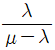
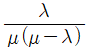
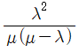
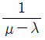
(정답률: 알수없음)
39. 교통공학에서 사용되는 계수분포(Counting Distribution)와 간격분포(Interval Distribution)로 나눌 때 다음 중 계수분포의 유형에 속하지 않는 것은?
- 포아송분포
- 음이향분포
- 정규분포
- 기하분포
(정답률: 50%)
40. 다음의 교통신호와 관련된 용어에 대한 설명 중 틀린 것은?
- 신호주기 : 교차로 신호등에서 녹색 신호가 켜진 후 다시 녹색 신호가 켜지기까지의 시간
- 현시 : 교차로에서 동시에 통행할 수 있도록 각 방향교통류에 부여되는 통행권
- 분할비 : 신호 주기에 대한 유효 시간의 비
- 출발지체시간 : 신호가 적색에서 녹색으로 바뀐 후 첫 번째 차량이 교차로를 통과하기까지의 손실시간
(정답률: 알수없음)
3과목: 교통시설
41. 주차장의 주차대수 1대에 대한 일반형 주차단위구획의 너비와 길이는 최소 얼마 이상인가? (단, 평행주차형식이 아님)(2018년 03월 21일 개정된 규정 적용됨)
- 너비 2.50m, 주차길이 5.0m
- 너비 2.30m, 주차길이 5.0m
- 너비 2.75m, 주차길이 6.0m
- 너비 3.00m, 주차길이 6.5m
(정답률: 알수없음)
42. 평면교차로에서의 도류화 설계를 위한 기본 원칙에 대한 설명 중 옳지 않은 것은?
- 회전차량의 대기장소는 직진교통으로부터 잘 보이는 곳에 위치해야 한다.
- 운전자의 인지성 확보를 위해 교통섬 내에 식수 등을 하도록 한다.
- 필요 이상의 교통섬을 설치하는 것은 피해야 하며, 원칙적으로 도류화가 필요하다 하더라도 좁은 면적에서는 이를 피해야 한다.
- 운전자에게 90˚이상 회전하거나 갑작스럽고 급격한 배향곡선 등의 부자연스런 경로를 주어서는 안 된다.
(정답률: 알수없음)
43. 설계속도가 120km/h인 고속도로의 버스정류장의 최소 길이는? (단, 직접식)
- 470m
- 540m
- 600m
- 420m
(정답률: 알수없음)
44. 다음 주차방식 중 중앙 차로쪽이 가장 커야 하는 것은? (단, 차종은 소형차)
- 30˚전진주차
- 45˚전진주차
- 60˚전진주차
- 60˚후진주차
(정답률: 알수없음)
45. 버스터미널의 입지선정으로 가장 부적절한 것은?
- 도심부에 설치하는 경우 도심의 교통수요가 큰 장소에 설치 한다.
- 대도시에서는 도심과 철도역 부근에 교통이 과다하게 집중되는 것을 방지하기 위해 부도심부에 설치한다.
- 중소도시에서는 버스의 승차, 여객의 승강에 이점이 있도록 철도역 부근에 설치한다.
- 대도시의 철도역 부근에 설치하는 경우 이용객의 편리를 위해 모든 노선을 함께 설치한다.
(정답률: 87%)
46. 지방지역에서의 인터체인지의 배치 기준에 대한 설명 중 옳지 않은 것은?
- 국도 등 주요 도로와의 교차 또는 접근 지점에 설치
- 인구 30,000명 이상의 도시 부근 또는 인터체인지 세력권 인구가 50,000~100,000명 정도가 되도록 배치
- 인터체인지의 출입교통량이 50,000대/일 이하가 되도록 배치
- 본선과 인터체인지에 대한 총비용 편익비가 극대가 되도록 배치
(정답률: 알수없음)
47. 설계속도가 90km/h인 도로의 곡선부에서 운전자가 핸들(Handle)의 조작에 곤란을 느끼지 않고 주행할 수 있는 최소 평면 곡선의 길이는?
- 100m
- 130m
- 170m
- 200m
(정답률: 알수없음)
48. 도로와 철도가 평면교차 하는 경우 교차 각 θ는 최소 얼마 이상이어야 하는가?
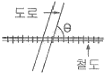
- 30˚
- 45˚
- 60˚
- 75˚
(정답률: 92%)
49. 다음의 시선유도시설에 대한 설명 중 옳지 않은 것은?
- 시선유도표지는 평면곡선반경이 작은 구간의 시거가 불량한장소에 갈매기 기호의 표지판을 설치하여 운전자의 안전주행을 도모한 시선유도시설이다.
- 도로의 측방에 설치하여 도로 끝 및 도로의 선형을 명시하여 주간 및 야간에 운전자의 시선을 유도하기 위하여 설치하는 시설물이다.
- 직선 및 곡선부에 일정한 간격으로 설치한다.
- 반사체가 최적의 효과를 발휘할 수 있도록 설치한다.
(정답률: 알수없음)
50. 중앙분리대에 설치되는 측대의 폭은 최소 얼마 이상으로 하여야 하는가? (단, 설계속도가 80km/h 이상인 경우)
- 2m
- 1.5m
- 1m
- 0.5m
(정답률: 알수없음)
51. 차도의 차로수 결정에 대한 설명 중 옳지 않은 것은?
- 교통량이 적은 경우에도 2차로 이상으로 하는 것을 원칙으로 한다.
- 차로수의 결정은 원칙적으로 설계시간교통량과 설계서비스 수준을 고려한 설계시간교통량에 의하여 결정한다.
- 지방지역의 차로수는 홀수 차로를 원칙으로 한다.
- 도시지역의 차로수는 그 도로의 여건에 따라 홀수 차로로 할 수 있다.
(정답률: 알수없음)
52. 도로를 설계할 때 설계기준 차량의 종류가 아닌 것은?
- 소형 자동차
- 대형 자동차
- 세미트레일러
- 중장비
(정답률: 알수없음)
53. 도시지역의 간선도로에서 보도의 최소 폭은?
- 1.5m
- 2.0m
- 3.0m
- 4.0m
(정답률: 알수없음)
54. 횡단보도육교의 구조에 대한 설명 중 옳지 않은 것은?
- 보행자수가 80인/분 미만일 경우 폭은 최소 1.5m 이상으로 한다.
- 난간의 높이는 80cm 이상, 폭은 5cm 이상이어야 한다.
- 보도육교의 높이가 3m를 초과할 경우 계단창을 설치하여야 한다.
- 계단턱 등은 미끄럼 방지를 위한 시설 등을 설치해야 한다.
(정답률: 알수없음)
55. 비신호 교차로의 경우 좌회전 차로의 대기차량을 위한 길이의 기준으로 옳은 것은?
- 첨두시간 평균 1분간 도착하는 좌회전 교통량
- 첨두시간 평균 2분간 도착하는 좌회전 교통량
- 첨두시간 평균 3분간 도착하는 좌회전 교통량
- 첨두시간 평균 5분간 도착하는 좌회전 교통량
(정답률: 알수없음)
56. 다음의 설계용량에 대한 설명 중 옳은 것은?
- 설계용량은 통상 설계시간 교통량보다 작다.
- 설계용량은 통상 설계시간 교통량보다 크다.
- 설계용량은 설계시간 교통량과 언제나 같다.
- 설계용량은 통상 설계시간 교통량보다 같거나 작다.
(정답률: 알수없음)
57. 도로의 부속시설 중 비상주차대에 대한 설명으로 옳지 않은 것은?
- 고속도로에서 우측 길어깨의 폭원이 2.5m 미만일 경우에는 비상 주차대를 설치해야 한다.
- 비상주차대의 설치간격 결정 시에는 고장차가 그대로의 상태로 주행할 수 있을 것인가 또는 인력으로 밀어 대피시킬 것인가를 감안하여 가능한 거리를 판단해야 한다.
- 고속도로에서공사비의절감을 위하여 길어깨를 축소하는 장대교, 터널에는 적당한 간격으로 비상주차대를 설치한다.
- 도시고속도로,주간선도로로서우측길어깨의 폭원이 2.0m 미만일 경우에는 반드시 비상주차대를 설치해야 한다.
(정답률: 알수없음)
58. 평면교차로 설계의 기본원리에 관한 설명으로 틀린 것은?
- 엇갈림 교차, 굴절교차 등의 변형교차는 피해야 한다.
- 교차로의 면적은 가능한 한 최소가 되도록 한다.
- 상충이 발생하는 교통류간의 상대속도의 차이를 크게 한다.
- 교통특성이 서로 다른 교통류는 분리시켜야 한다.
(정답률: 90%)
59. 설계속도 70km/h이상, 80km/h 미만인 지방지역 일반도로의 차로의 최소폭은?
- 2.75m
- 3.00m
- 3.25m
- 3.50m
(정답률: 73%)
60. 버스정류시설 중 버스승객의 승강을 위하여 본선 차로에서 분리하여 설치된 띠 모양의 공간을 의미하는 것은?
- 버스정류장
- 버스정류소
- 버스터미널
- 공동구
(정답률: 82%)
4과목: 도시계획개론
61. 사회간접자본에 대하여 제3섹터 혹은 민간회사가 시설을 건설한 후 일정기간 동안 소유 및 운영을 하며, 일정기간 경과 후 소유권 및 운영권이 정부에 귀속되는 민간자본투자형태는?
- BOO(Build-Own-Operate)
- BOT(Build-Own-Transfer)
- BTO(Build-Transfer-Operate)
- BLT(Build-Lease-Transfer)
(정답률: 알수없음)
62. 다음 도시경제이론 중 과거 두 시점간의 국가경제, 지역경제, 산업구조를 분석하여 당해 지역의 어떤 산업이 건전하게 성장하는가 또는 성장할 것인가를 파악하는 방법은?
- 변이할당분석(Shift-Share Analysis)
- 경제기반이론(Economic Base Theory)
- 지역성장모형(Regional Growth Theory)
- 투입산출분석(Input-output Analysis)
(정답률: 50%)
63. 현재인구 50만인의 도시가 있다, 20년 후의 장래인구를 등비급수에 의하여 추정하고자 한다. 과거인구추세에 의한 인구증가율이 3%일 때 20년 후의 계획인구는?
- 약 70만인
- 약 90만인
- 약 110만인
- 약 130만인
(정답률: 알수없음)
64. 다음의 도시계획시설사업의 단계별 집행계획에 대한 설명 중 ()안에 알맞은 것은?
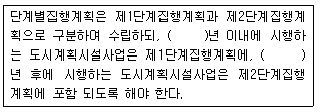
- 1년
- 2년
- 3년
- 5년
(정답률: 31%)
65. 도시계획시설의 결정ㆍ구조 및 설치기준에 관한 규칙에 따른 용도지역별 도로율이 옳지 않는 것은?
- 주거지역 : 20퍼센트 이상 30퍼센트 미만
- 상업지역 : 25퍼센트 이상 35퍼센트 미만
- 공업지역 : 10퍼센트 이상 20퍼센트 미만
- 녹지지역 : 5퍼센트 이상 10퍼센트 미만
(정답률: 42%)
66. 다음의 토지이용과 교통과의 관계를 설명한 것 중 옳지 않은 것은?
- 토지이용과 교통간의 관계는 상호의존적으로 작용하며 순환적인 관계를 가지고 있다.
- 교통발생의 양은 토지이용 용도배분에 따라 다르다.
- 토지이용 체계의 변화는 정태적이기 때문에 교통의 토지이용에 대한 영향을 떼내어 관찰하기 용이하다.
- 토지이용이 집약적인 경우 교통시설의 양은 증가한다.
(정답률: 42%)
67. 해리스(Chauncy D. Harris)와 울만(Edward L. Ullman)에 의한 다핵심이론에서 나타나지 않는 것은?
- C.B.D.
- 점이지구
- 도매, 경공업지구
- 고급주택지구
(정답률: 알수없음)
68. 도시지역과 그 주변지역의 무질서한 시가화를 방지하고, 계획적, 단계적인 개발을 도모하기 위하여 일정기간 시가화를 유보하고자 지정하는 구간은?
- 시가화유보구역
- 시가화정비구역
- 시가화조정구역
- 시거화유도구역
(정답률: 30%)
69. 도로의 규모별 구분 중 광로는 최소 폭 몇 m이상의 도로를 지칭하는 것인가?
- 30m
- 40m
- 50m
- 60m
(정답률: 39%)
70. C. A. Perry의 근린 주구에 대한 설명 중 틀린 것은?
- 주구 개발은 대체로 초등학교 1개교가 필요한 정도의 인구에 대응하는 호수를 기질 것
- 주구 단위는 통과 교통이 통과하지 않고 우회 하도록 함
- Open Space는 각 주구의 요구에 따라 계획된 소공원과 레크레이션 공간을 가질 것
- 서비스 공간을 갖는 학교, 기타 공공시설 용지는 주구의 변두리에 위치함
(정답률: 46%)
71. 계획관리지역 또는 개발진흥지구를 체계적ㆍ계획적으로 개발 또는 관리하기 위하여 용도지역의 건축물 그 밖의 시설의 용도ㆍ종류 및 규모 등에 대한 제한을 완화하거나 건폐율 또는 용적률을 완화하여 수립하는 계획은?
- 시기화조정계획
- 제1종지구단위계획
- 제2종지구단위계획
- 시범도시계획
(정답률: 알수없음)
72. 공동구(共同構)에 관한 설명 중 옳지 않은 것은?
- 가로와 도시의 미관을 개선할 수 있다.
- 노면의 내구력이 감소하여 노면유지비가 증대된다.
- 빈번한 노면굴착에 의한 교통장애를 제거할 수 있다.
- 각종 공작물의 관리자가 서로 달라 개장의 필요 정도 및 시기에 대하여 일치가 어렵다.
(정답률: 37%)
73. 현행 국토의 계획 및 이용에 관한 법률에서 정하고 있는 개발밀도관리구역의 지정기준과 가장 거리가 먼 것은?
- 당해 지역의 도로서비스 수준이 매우 낮아 차량통행이 현저하게 지체되는 지역
- 당해 지역의 도로율이 건설교통부령이 정하는 용도지역별 도로율에 20% 이상 미달하는 지역
- 향후 2년 이내에 당해 지역의 수도에 대한 수요량이 수도시설의 시설용량을 초과할 것으로 예상되는 지역
- 향후 3년 이내에 당해 지역의 학생수가 학교수용 능력을 20%이상 초과할 것으로 예상되는 지역
(정답률: 40%)
74. 케빈 린치(Kevin Lynch)는 「도시의 이미지(The image of the City)」에서 도시 환경의 5가지 이미지 요소를 제시하고 있는데, 다음 중 이 5가지 요소에 포함되지 않는 것은?
- 도로(path)
- 기념적 건조물(landmark)
- 공간(space)
- 지구(district)
(정답률: 알수없음)
75. 격자형 도로에 대한 설명으로 옳은 것은?
- 교통의 흐름이 도심집중형이다.
- 지형이 평탄한 도시에 적합하다.
- 인구 100만 이상의 대도시 계획에 적합하다.
- 횡적인 연결은 환상선으로, 도심부와 교외 및 외곽은 방사선으로 연결된다.
(정답률: 알수없음)
76. 다음 중 도심 공동화 현상의 근본 원인으로 가장 알맞은 것은?
- 도심 상권의 확대
- 높은 지가
- 야간인구의 도심 집중
- 제 2, 3차 산업의 도심 집중
(정답률: 10%)
77. 다음 중 국토의 계획 및 이용에 관한 법률에서 수립과 집행 등에 관해 정하고 있는 국토의 이용과 개발 및 보전을 위한 계획들에 대하여 상위계획부터 하위계획의 순서로 올바르게 열거한 것은?
- 도시기본계획-광역도시계획-도시관리계획-지구단위계획
- 도시기본계획-광역도시계획-지구단위계획-도시관리계획
- 광역도시계획-도시기본계획-도시관리계획-지구단위계획
- 광역도시계획-도시관리계획-도시기본계획-지구단위계획
(정답률: 알수없음)
78. 대가구(Super Block)가 도입되게 된 직접적인 배경은 무엇인가?
- 통과 교통의 배제
- 공원녹지 배치의 융통성
- 토지이용의 다양화
- 편익시설 접근의 용이성
(정답률: 알수없음)
79. 도시계획시설로서의 자전거전용도로의 폭원에 대한 최소기준은? (단, 길이가 100m 미만인 터널 및 교량의 경우 제외)
- 0.7m 이상
- 1.0m 이상
- 1.1m 이상
- 1.5m 이상
(정답률: 알수없음)
80. 다음 중 도시교통의 특성에 해당되지 않는 것은?
- 통행목적을 달성하기 위해 도시 간을 연결해 주는 중장거리 교통이다.
- 효과적인 대책으로 대중교통육성 등 대량 수송을 필요로 한다.
- 하루 중 오전과 오후 2회에 걸쳐 첨두현상이 발생된다.
- 도심지와 같은 특정지역에 통행이 집중된다.
(정답률: 알수없음)
5과목: 교통관계법규
81. 도로법상 도로구조 보전과 안전하고 원활한 도로교통의 확보 기타 도로의 관리에 필요한 시설 또는 공작물을 의미 하는 것은?
- 안전지대
- 도로의 부속물
- 대피소
- 타공작물
(정답률: 알수없음)
82. 자동차등의 속도규정에서 최고속도의 100분의 50을 줄인 속도로 운행하여야 하는 경우에 속하지 않는 것은?
- 비가 20밀리미터 이상 내린 경우
- 폭우ㆍ폭설ㆍ안개 등으로 가시거리가 100미터 이내인 경우
- 노면이 얼어붙은 경우
- 눈이 20밀리미터 이상 쌓인 경우
(정답률: 알수없음)
83. 도시교통정비기본계획의 수립을 위하여 실시하는 기초 조사에 해당하지 않는 것은?
- 교통혼잡지역의 현황ㆍ원인 및 대책
- 자동차보유현황 및 증가추세
- 교통시설의 이용현황 및 변화추이
- 간선도로 및 교차로에서의 교통량의 현황 및 그 변화추이
(정답률: 알수없음)
84. 도시교통정비기본계획에 포함되는 사항이 아닌 것은?
- 도시교통의 현황 및 전망
- 여객터미널시설에 대한 교통영향평가
- 주차장의 건설과 운영
- 자전거이용시설의 확충
(정답률: 알수없음)
85. 토지의 이용 및 건축물의 용도ㆍ건폐율ㆍ용적율ㆍ높이 등에 대한 용도지역의 제한을 강화 또는 완화하여 적용함으로써 용도지역의 기능을 증진시키고 이관ㆍ경관ㆍ안전 등을 도모하기 위하여 도시관리계획으로 결정하는 지역은?
- 개발밀도관리구역
- 용도구역
- 공동구
- 용도지구
(정답률: 20%)
86. 다음 중 접도구역의 지점 목적이라고 할 수 없는 것은?
- 도로구조에 대한 손괘의 방지
- 도로 미관의 보존
- 교통에 대한 위험의 방지
- 도로변의 풍치유지
(정답률: 37%)
87. 다음 중 신호기가 표시하는 신호의 종류와 그 뜻의 연결이 옳은 것은? (단, 차량신호등)
- 녹색의 등화 : 차마는 직진할 수 있고 다른 교통에 방해되지 않도록 천천히 우회전 할 수 있다.
- 황색의 등화 : 차마는 언제나 우회전 할 수 있다.
- 적색의 등화 : 차마는 우회전 할 수 없다.
- 적색등화 점멸 : 차마는 진행 할 수 없다.
(정답률: 46%)
88. 다음 중 모든 차의 운전자가 일시정지 해야 하는 곳은?
- 교통정리가 행하여지고 있지 아니하고 좌우를 확인할 수 없거나 교통이 빈번한 교차로
- 도로가 구부러진 부근
- 비탈길의 고개마루 부근
- 가파른 비탈길의 내리막 직전
(정답률: 알수없음)
89. 도로법상 등급별로 나누어진 도로의 종류에 속하지 않는 것은?
- 고속국도
- 일반국도
- 군도
- 직할시도
(정답률: 알수없음)
90. 교통안전법규에서 규정하고 있는 다음 설명 중 옳지 않은 것은?
- 교통안전기본계획은 교통안전에 관한 종합적ㆍ장기적인 추진 방안에 대하여 10년마다 수립한다.
- 교통안전진단은 지정행정기관의 장이 교통안전시설, 교통안전에 사용되는 장비 등에 대하여 실시한다.
- 건설교통부장관은 교통안전관리자의 자격취소의 권한을 시ㆍ도지사에게 위임한다.
- 교통안전관리자는 도로, 선박, 항만하역, 항공, 철도, 삭도 교통안전관리자로 구분되며 건설교통부장관이 자격을 교부한다.
(정답률: 알수없음)
91. 타공사 또는 타행위로 인하여 필요하게 된 도로공사의 비용은 타공사 또는 타행위의 비용을 부담하여야 할 자에게 부담하도록 하는 것을 무엇이라고 하는가?
- 수익자부담금
- 이용자부담금
- 원인자부담금
- 손궤자부담금
(정답률: 40%)
92. 도로교통법에서 사용하는 용어의 정의가 옳지 않은 것은?
- "일시정지"라 함은 차의 운전자가 그 차의 바퀴를 일시적으로 완전히 정지시키는 것을 말한다.
- "정차"라 함은 운전자가 5분을 초과하지 아니하고 차를 정지시키는 것으로서 주차 외의 정지 상태를 말한다.
- "서행"이라 함은 운전자가 차를 즉시 정지시킬 수 있는 정도의 느린 속도로 진행하는 것을 말한다.
- "안전지대"라 함은 보도와 차도가 구분되지 아니한 도로에서 보행자의 안전을 확보하기 위하여 안전표지 등으로 경계를 표시한 도로의 가장자리 부분을 말한다.
(정답률: 알수없음)
93. 노외주차장인 주차전용건축물의 제한 규정으로 틀린 것은?
- 건폐율 : 100분의 90 이하(90/100)
- 용적율 : 1천500퍼센트 이하(1,500%)
- 대지면적의 최소한도 : 45제곱미터 이상(45m2)
- 연면적 : 1만제곱미터 이상(10,000m2)
(정답률: 알수없음)
94. 환경ㆍ교통ㆍ재해등에 관한 영향 평가법의 벌칙 규정에서 1천만원 이하의 과태료 처분기준에 해당되는 자는?
- 평가서, 환경영향의 조사결과를 부실하게 작성한 평가 대행자
- 관리대장을 비치하지 아니하거나 관리책임자를 지정하지 아니한 자
- 환경영향의 조사결과를 통보하지 아니한 자
- 사업착공 등의 통보를 하지 아니한 자
(정답률: 30%)
95. 도로의 구조ㆍ시설기준에 관한 규칙 상의 도로 구분에 대한 설명으로 옳지 않은 것은?
- 도로는 고속도로와 일반도로로 구분한다.
- 고속도로중도시지역에소재하는고속도로는도시고속도로로한다.
- 지방지역에 소재하는 일반도로중 주간선도로의 기능별 구분에 상응하는 도로의 종류는 국도이다.
- 지방도는 집산도로의 기능만을 수행한다.
(정답률: 28%)
96. 노상주차장의 구조ㆍ설비기준에 관한 설명 중 옳지 않은 것은?
- 고속도로ㆍ자동차전용도로 또는 고가도로에 설치하여서는 아니된다.
- 도로의 너비 또는 교통상황등을 참작하여 그 도로를 이용하는 자동차의 통행에 지장이 없도록 설치하여야 한다.
- 주간선도로에는 어떠한 경우에도 설치하여서는 아니된다.
- 주차대수규모가 20대 이상인 경우에는 장애인전용주차구획을 1면 이상 설치하여야 한다.
(정답률: 30%)
97. 도로 교통법상 차마의 운전자가 도로의 중앙이나 좌측부분을 통행할 수 있는 경우에 속하는 것은?
- 편도교통이 혼잡한 경우
- 도로가 일방통행인 경우
- 중앙선이 있는 도로에서 진로병경을 하는 경우
- 대형차가 진로를 방해할 경우
(정답률: 42%)
98. 다음의 주차장의 수급실태 조사에 대한 설명 중 옳지 않은 것은?(2021년 08월 27일 변경된 규정 적용됨)
- 아파트단지와 단독주택단지가 혼재된 지역의 경우에는 주차 시설수급의 적정성, 지역적 특성 등을 고려하여 동일한 특성을 가진 지역별로 조사구역을 설정한다.
- 실태조사의 주기는 3년으로 한다.
- 시장ㆍ군수 또는 구청장은 설정된 조사구역별로 주차수요조사와 주차시설현황조사로 구분하여 실태조사를 하여야 한다.
- 원형 형태로 조사구역을 설정하되 조사구역 바깥 경계선의 최대거리가 400미터를 넘지 아니하도록 한다.
(정답률: 알수없음)
99. 다음 중 주차금지 장소가 아닌 곳은?
- 소방용 기계ㆍ기구가 설치된 곳으로부터 10미터 떨어진 곳
- 소방용 방화물통으로부터 4미터 떨어진 곳
- 화재경보기로부터 2미터 떨어진 곳
- 터널 안 및 다리 위
(정답률: 19%)
100. 도시계획 수립대상 지역안의 일부에 대하여 토지이용을 합리화하고 그 기능을 증진시키며 미관을 개선하고 양호한 환경을 확보하며, 당해 지역을 체계적ㆍ계획적으로 관리하기 위하여 수립하는 도시관리계획은?
- 도시기본계획
- 광역도시계획
- 지구단위계획
- 국토 및 도시계획
(정답률: 50%)
6과목: 교통안전
101. 다음의 도로의 조명기구에 관련된 설명 중 ()안에 알맞은 것은?
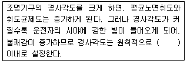
- 5˚
- 7˚
- 10˚
- 12˚
(정답률: 77%)
102. 다음 4개의 지점 중 교통사고율이 가장 높은 지점은?
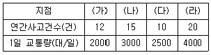
- (가) 지점
- (나) 지점
- (다) 지점
- (라) 지점
(정답률: 알수없음)
103. 지도상에 핀, 색종이를 붙이거나 표시를 하여 사고가 집중적으로 발생하는 지점의 신속한 시각적 색인을 제공하는 것은?
- 사고지점도
- 충돌도
- 대상도
- 현황도
(정답률: 90%)
104. 교통사고연구를 위해 권장되는 지방부 도로의 표준구간장은?
- 2km
- 4km
- 6km
- 8km
(정답률: 94%)
1⑤. 위험도 평가 방법 중 과거의 사고자료를 사용하지 않고 현재의 잠재적인 사고가능성을 조사하여 위험도를 판정하는 방법은?
- 사고건수법
- 사고율법
- 사고건수-율법
- 교통상충법
(정답률: 알수없음)
106. 방향전환성능을 가지지 않는 단순 충격완화시설이 갖추어야 할 요건이 아닌 것은?
- 측면에서 충돌하는 차량은 부드럽게 방향을 바꾸도록 해야한다.
- 충격완화시설은 안전벨트를 맨 탑승자가 생존할 수 있을(더 바람직하기로는 부상을 입지 않음) 정도로 감소시켜야 한다.
- 충격완화시설은 기본적으로 차량의 층돌이 이루어지는 동안 및 그 이후에도 흩어지지 않아야 한다.
- 충격완화시설은 신속한 보수가 가능해야 한다.
(정답률: 알수없음)
107. 교통안전시설인 중앙방호책의 기능적 구간 구성요소로 옳지 않은 것은?
- 표준구간
- 전이구간
- 끝부분
- 완충구간
(정답률: 40%)
108. 다음의 교통안전조치 중 이동성과 상충하지 않는 조치는?
- 안전벨트
- 접근을 제한하는 가로배치
- 속도제한
- 과속방지턱
(정답률: 알수없음)
109. 다음의 양방향 2차로 도로에서 앞지르기 시거와 관련된 설명 중 ()안에 알맞은 것은?
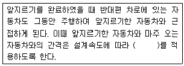
- 15 ~ 70m
- 75 ~ 130m
- 130 ~ 160m
- 165 ~ 230m
(정답률: 82%)
110. 운전시의 인간행동의 각 단계는 극히 단시간 내에 연속적으로 되풀이 되어서 일어나고 있다. 그 순서로 맞는 것은?
- 인지→조작→판단
- 인지→판단→조작
- 인지→찬단→숙지
- 인지→숙지→판단
(정답률: 100%)
111. 음주운전은 교통사고의 매우 심각한 문제이다. 알코올 영향의 감소는 단지 인체가 소모함으로써 가능한데 일반적으로 소모되는 비율로 가장 적절한 것은?
- 0.0⑤ ~ 0.010 %/hr
- 0.010 ~ 0.015 %/hr
- 0.015 ~ 0.020 %/hr
- 0.020 ~ 0.025 %/hr
(정답률: 60%)
112. 인터체인지 램프의 사고율과 가장 관계가 먼 것은?
- 기하설계요소
- 주도로의 평면 및 종단 선형과의 관계
- 램프의 위치
- 램프의 교통량
(정답률: 50%)
113. 속도제한구간을 설정하는 이유가 아닌 것은?
- 도로 및 교통조건에 적합한 속도보다 제한속도가 너무 높거나 낮으면 제한속도를 무시하는 경향이 있다.
- 단속가능할 정도의 속도제한이 효과적이다.
- 동일한 속도제한은 어떠한 도로조건이나 교통조건하에서도 타당성을 갖는다.
- 실제현장의 교통여건에 맞는 제한속도는 사고를 줄일 수 있다.
(정답률: 80%)
114. 50 km의 도로구간에서 1년 동안 100건의 교통사고가 발생하였다. 조사결과 일평균 교통량이 8,000대이고, 총 사고건수 중 5%가 치명적인 사고였다면 차량 1억대ㆍkm당 치명적 사고발생률은 얼마인가?
- 2.74
- 3.42
- 4.78
- 10.00
(정답률: 알수없음)
115. 안전성 측면에서 일방통행도로의 특징에 대한 설명 중 옳지 않은 것은?
- 대향교통이 없으므로 정면충돌사고는 없지만 측면충돌사고가 많이 발생한다.
- 교차로에서의 상충지점수가 적다.
- 회전차량을 추월할 수 있으므로 추돌사고의 가능성이 줄어든다.
- 정지수를 줄이고 차량군을 형성하여 교차로를 통과함으로써 황단보행자나 횡단교통을 위한 시간간격을 마련할 수 있다.
(정답률: 알수없음)
116. 운전자가 위험상태를 발견하고 브레이크를 밟아야 하겠다고 판단하면서부터 브레이크 페달을 밟아 브레이크가 작동하기까지 주행한 거리는?
- 주행거리(走行距離)
- 정지거리(停止距離)
- 제동거리(制動距離)
- 공주거리(空走距離)
(정답률: 알수없음)
117. 승용차가 평지에서 앞 차량과의 추돌을 피하기 위해 급정거하였으나 아스팔트 포장면에서 40m, 갓길에서 25m를 미끄러진 후 정지하였을 때 이 차량의 갓길 활주시작점의 초기속도는 얼마인가? (단, 마차계수는 아스팔트 포장면에서 0.5, 갓길에서 0.6이었다.)
- 61.73 km/h
- 65.56 km/h
- 70.43 km/h
- 75.85 km/h
(정답률: 알수없음)
118. 한 차량이 40m 거리를 미끄러져 주차한 차량과 충돌하였으며 충돌 후 두 차량이 함께 15m를 미끄러져 정지하였다. 양 차량의 무게가 동일할 때 주행차량의 초기 속도는? (단, 마찰계수는 0.5로 한다.)
- 101.2kph
- 1⑤.4kph
- 117.3kph
- 111.8kph
(정답률: 알수없음)
119. 도시가로의 안전조치 중 비용-효과성과 안전효율성을 동시에 높게 만족시키는 조치와 거리가 먼 것은?
- 회전차로
- 사고지점의 재포장
- 부러지는 지주
- 차로폭 확장
(정답률: 알수없음)
120. 곡선미끄럼을 한 어느 차량의 네 바퀴의 미끄럼흔적 길이가 아래와 같을 때 이 차량의 미끄럼거리(m)는?
- 10.0m
- 10.6m
- 11.1m
- 12.0m
(정답률: 59%)